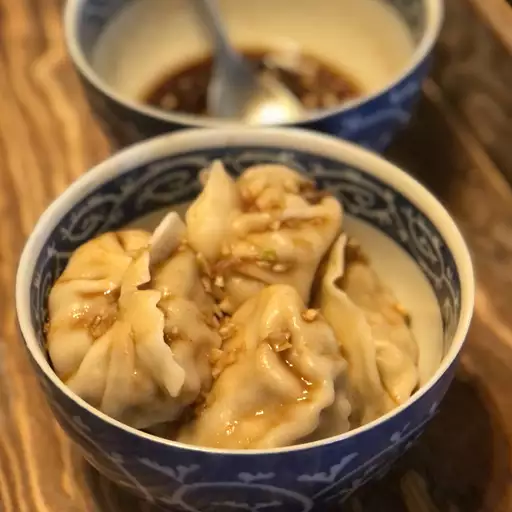

Pork Dumplings

Description
These tasty steamed pork dumplings make a perfect appetizer for a party or you can serve them as a main dish. Serve with hoisin sauce, hot Chinese-style mustard, and toasted sesame seeds.
Ingredients
- 100 (3.5 inch square) wonton wrappers
- 1 ¾ pounds ground pork
- 1 tablespoon minced fresh ginger root
- 4 cloves garlic, minced
- 2 tablespoons thinly sliced green onion
- 4 tablespoons soy sauce
- 3 tablespoons sesame oil
- 1 egg, beaten
- 5 cups finely shredded Chinese cabbage
Directions
Ready to make the best steamed pork dumplings of your life? You'll find the full, step-by-step recipe below — but here's a quick overview of what you can expect:
- Make the Filling
- Fill the Dumplings
- Steam the Dumplings